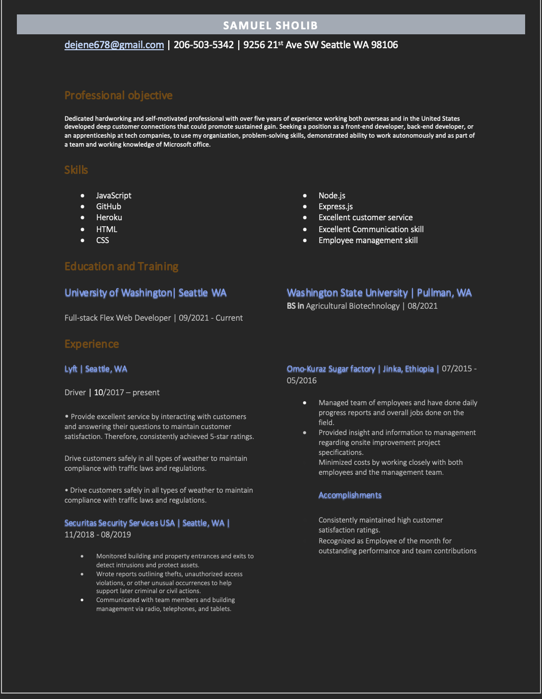
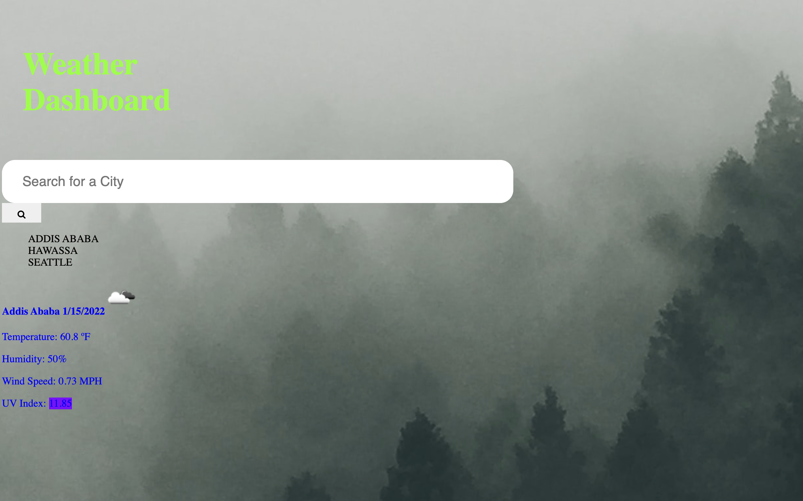
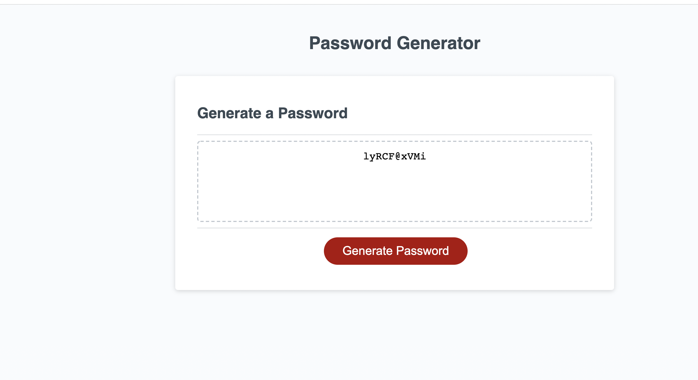

I was born and raised in Ethiopia and came to the States in 2016 at age of 22. In Ethiopia, I have gone on to earn a degree in plant science from Bahir-Dar University. Therefore, when I came to the states, I continued with my studies and got my second bachelor's from Washington State University in Agricultural Biotechnology And now here at the University of Washington Coding Bootcamp. However, I had never taken a coding class before. Therefore, this is my first-time learning to code.
My professional career started at the Omo-Kuraz Sugar factory in Ethiopia. I was a field coordinator at the Sugar factory, but I only spent about nine months at the factory mainly because I was offered a permanent residency card by the government of the United States. As a result, I moved to the States and began my new journey here in the United States. Once I moved to the states, I started my career in the service industry and moved on to become an unarmed security guard at Microsoft, Hyatt Regency Seattle, and Hertz car Rental at SeaTac airport. At the same time, I worked for Lyft as a part-time driver.
An app built to test programming knowledge of coding students.
An app built to generate a robust password to customers who struggle to come up with strong password for themselves.
An app built to help a busy client by simplifing his/her work into hours. Therefore, he/she knows what to do in every hours of each day
An app built to present users with current and future weather conditions of citys they want travel or move in.
Everytime a user search for a city, the user will be presented with the citys name, the date, an icon representation of weather conditions such as; the temperature, the humidity, the wind speed, and the UV index of that city.
A Command line app built to take users' input and use them to generate a high-quality README. Users will be prompted to answer some questions like what the title of their project is? And Then, the user’s input will be displayed as title of their project.
An app built to help small business owners by letting them take note of their daily activity. When the user opens the Note Taker app, he/she will be presented with a landing page with a link to a notes page. Once the user clicks on the link, he/she will be able to add a title and description of their note. Once the user saves their notes, they will be displayed on the left side of the screen.
This is also a command-line app similar to the readme generator. It also takes the user's input to generate a team profile. Some questions like who the manager of the team is and take user’s answer as managers name. Once the user answers all the questions, the team profile gets generated.
E-Commerce-back-end is a command-line interface applicaiton built for commercial use such as shopping. It is built using node packages such as; mysql2, sequelize, and express.js.
Employee-tracker is a command-line interface application for building and maintaining companies' employee data base. The team manager will be able to see a list of employees, add a new employee, add a role, update a role of an existing employee, update a manager. It is built using node packages such as mysql2, inquirer, and express.js.
Tech Blog a blog site similar to a Wordpress site, where developers can publish their blog posts and comment on other developers’ posts as well.
An app Built to return a drink recommendation that goes with the users movie selection when they search for their favorite movies.
Melody-Medley is a music app built using both front-end back-end languages. Once you are in Melody-Medley, you will find your favorite songs just by searching either song title or artist’s name. Also, the app offers variety of features such as adding a playlist, adding your favorite music into your existing playlist, remove music from your playlist etc...